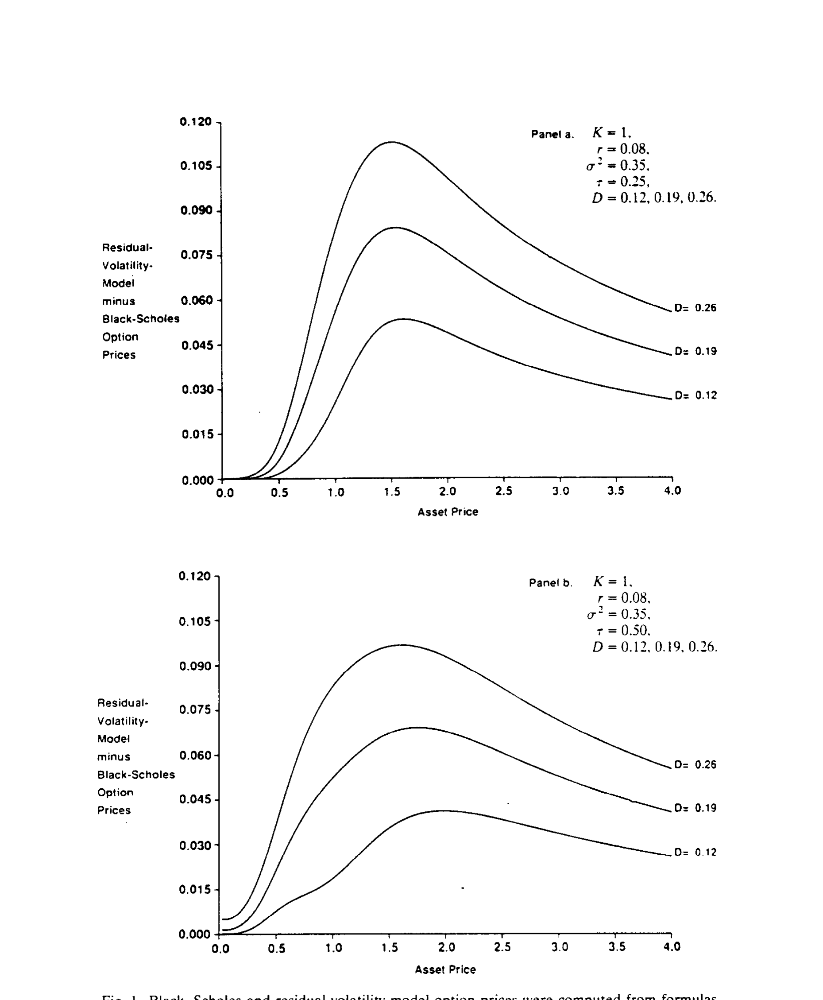
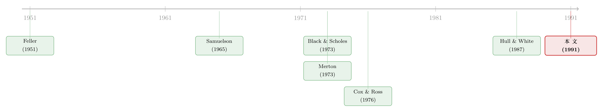

给期权定价换一把「万能钥匙」：当所有扩散过程都能折回布朗运动
本文读的是 Goldenberg (1991, Journal of Financial Economics)：与其为每一种新的资产价格扩散过程都重新解一遍偏微分方程，不如用「时间变换」和「尺度变换」把它折回一个我们早就会算的过程（比如算术布朗运动）。这样一来，已知过程的期权定价公式只需「换几个自变量」就能搬到新过程上——Black-Scholes 公式、Merton 的时变波动率公式、带分红的期权、CEV 期权，全都成了同一台机器吐出的特例。
1 一个让人头疼的「各自为政」
先说一件让所有学过期权定价的人都心知肚明、却又不太愿意承认的事：Black-Scholes 公式之所以漂亮，是因为它只在一个非常苛刻的假设下成立。
这个假设就是——标的资产价格服从参数恒定的对数正态扩散 (log-normal diffusion)，也就是几何布朗运动。在这个假设下，欧式期权的均衡价格有闭式解 (closed-form)，干净利落。
可现实呢？现实里几乎没有哪个资产的波动率是「恒定」的。期货合约的波动率随到期临近而上升，股票收益里有周末效应、有季节性，债券价格的波动更是随利率结构而变。换句话说，经验证据强烈暗示着各式各样「非恒定」的波动率形态，可一旦你换掉对数正态这个假设，闭式解就立刻消失了。
为什么？因为按照传统做法，给一个新过程的期权定价，等价于去解一个新的偏微分方程 (partial differential equation, PDE)。而这件事——用作者自己的话说——「和直接解期权价格的那个 PDE 一样难」。于是结果就是：经验上合理的波动率形态有无数种，但真正能写出闭式解的过程，扳着手指头就数得过来：对数正态、Ornstein-Uhlenbeck 的绝对过程、Feller 的平方根过程，再加上 Cox (1975) 的常弹性方差 (constant-elasticity-of-variance, CEV) 扩散。剩下的，几乎一片空白。
这就是本文要面对的张力：我们想要很多种波动率，可数学只肯给我们很少几个闭式解。 每来一个新过程，就得从头啃一遍 PDE，像是每开一扇门都要现配一把钥匙。
那么，一个自然的问题是：能不能不要再一把一把地配钥匙了？
2 真正关键的一步：不解新方程，而是「折回去」
本文的核心洞见，简单到近乎狡黠：与其去解新过程的方程，不如把新过程「变」回一个旧过程。
这里要先交代清楚定价的出发点。在无套利、市场完备的假设下，Cox and Ross (1976) 与 Harrison and Kreps (1979) 给了我们一个干净的表示：欧式看涨期权的均衡价格，等于风险中性概率下贴现的期望收益。记 \(B(t,T)\) 为 \(t\) 时刻到期日为 \(T\) 的单位贴现债券价格，
$$B(t,T) = \exp\!\left(-\int_t^T r_s\,ds\right),$$
则期权价格写作
$$C(Y_t,t;K,T) = B(t,T)\int_{y>K}(y-K)\,\phi(T,y;t,Y_t)\,dy.$$
这里 \(\phi\) 是风险中性过程 \(Y_t\) 的转移密度函数 (transition density function)。这个表示告诉我们一件事：给期权定价这件事，本质上被归约成了「求出转移密度 \(\phi\)」。而 \(\phi\) 满足 Kolmogorov 的前向、后向方程——可惜，解它和解原来那个 PDE 一样难。
死路一条？不。真正关键的一步在于：如果两个过程之间，能通过「改变时间的流速」和「改变空间的尺度」联系起来，那么它们的转移密度之间、进而它们的期权价格之间，也存在一一对应的变换关系。于是，只要其中一个过程的期权公式已知，另一个就顺手可得，根本不必再解一次方程。
这就是本文的灵魂：时间变换 (time change) 与尺度变换 (scale change)。
（顺带一提，「用一个会变速的时钟把复杂过程拉直」这个思路，后来在跳跃-扩散模型里被发挥到极致，可参见《把「跳跃、波动、杠杆」三件事，交给一只会变速的钟》。本文可以说是这条思路在闭式期权定价里的一次早期、系统化的奠基。）
3 从最朴素的砖块开始：算术布朗运动与 Samuelson 的三宗罪
要搭一座房子，得先有一块最基本的砖。本文选的这块砖，是算术布朗运动 (arithmetic Brownian motion)，记为 \(Z_t\)，满足
$$dX_t = dZ_t.$$
它是最简单的连续鞅，没有漂移。它对应的期权价格，其实早在 Bachelier 那里就有了 [见 Smith (1976)]：
$$C_a(X_t,t;K,T) = (X_t-K)\,N\!\left(\frac{X_t-K}{\sigma\sqrt{\tau}}\right) + \sigma\sqrt{\tau}\,N'\!\left(\frac{X_t-K}{\sigma\sqrt{\tau}}\right),$$
其中 \(\tau = T-t\)，\(N(\cdot)\) 是标准正态分布函数，\(N'(\cdot)\) 是其密度。
接着，一个自然的问题是：既然 Bachelier 这么早就有了公式，为什么大家最后都用几何布朗运动、用 Black-Scholes？
答案藏在 Samuelson (1965) 对算术布朗运动提出的三宗罪里：
- 第一宗：它违反股价的有限责任性质——算术布朗运动可以跌破零，变成负价格。
- 第二宗：当 \(\tau\) 增大时，期权价格 \(C_a\) 会超过标的资产本身的价格，这显然荒谬。
- 第三宗：作为一个零漂移的鞅，\(Z_t\) 只与零利率相容，因为它的漂移为零。
Samuelson 当年的解决办法很直接：换掉它，用几何布朗运动取而代之，于是有了对数正态那一套。
但本文偏不。作者说：这三宗罪，其实可以在算术布朗运动「内部」就地解决——而恰恰是这个「就地解决」的过程，提示了一种能生成新公式、又能统一旧结果的方法。
怎么解？
针对第一宗罪（跌破零）：给 \(Z_t\) 在零处加一道吸收壁 (absorbing barrier)。被零吸收的算术布朗运动，其转移密度可以用反射原理 (reflection principle) 写出 [Karlin and Taylor (1975)]：
$$p_0(\tau,x,y) = p(\tau,x,y) - p(\tau,-x,y).$$
直觉很美：从 \(x\) 出发、在 \(T\) 时落到 \(y\) 又从未碰过零的概率，等于「自由地落到 \(y\)」减去「从镜像点 \(-x\) 出发落到 \(y\)」——后者恰好抵消掉那些中途碰过零的路径。
针对第二宗罪：加了吸收壁之后，期权价格永远低于 \(X_t\)；而且当 \(\tau\to\infty\) 时它趋向 \(X_t\) 本身——这非常合理，因为「永不到期的期权」就等价于资产本身。
针对第三宗罪：给算术布朗运动加上一个比例漂移项，再在零处吸收。最一般地，把 \(X_t\) 替换成满足下式、并在零处吸收的过程：
$$dY_t = r_t\,Y_t\,dt + \sigma_t\,dZ_t.$$
这正是带吸收的广义 Ornstein-Uhlenbeck（绝对）过程的风险中性版本。它一举化解了 Samuelson 的三宗罪。
到这里，砖块就齐了。下一步，是把这块砖「拉伸、变速」成各种形状。
4 第一块拼图：高斯扩散与 Proposition 1
本文的第 3 节先处理一类特殊但重要的情形：风险中性动态是高斯扩散 (Gaussian diffusion)、并在零处吸收的资产。具体说，就是上面那个 \(dY_t = r_t Y_t dt + \sigma_t dZ_t\)，其扩散系数 \(\sigma\) 至多只是时间 \(t\) 的函数（而不依赖于 \(Y_t\)）。
作者证明，这样一个过程可以通过尺度变换 \(f(t)\) 和时间变换 \(\tau(t)\)，
$$f(t) = B(0,t), \qquad \tau(t) = \int_0^t \big[B(0,s)\,\sigma(s)\big]^2\,ds,$$
与一个标准的、被零吸收的算术布朗运动联系起来。于是就有了——
Proposition 1（高斯扩散的期权定价）：对任何风险中性动态为「零处吸收的高斯扩散」的资产，只需把它的条件均值 \(Y_t/B(t,T)\) 代入算术布朗运动公式里的「当前价格」，把它的条件方差 \(A(t,T)\) 代入「到期时间」，再用单位贴现债券 \(B(t,T)\) 贴现，就得到期权价格。
这里 $$A(t,T) = \big[B(0,T)\big]^{-2}\int_t^T \big[B(0,s)\big]^2\,\sigma_s^2\,ds.$$
注意这个 \(A(t,T)\) 的含义：它是资产在整个剩余生命里累积下来的总方差，而不是某个瞬时方差乘以时间。这个「总波动率」的思想，是贯穿全文的一条暗线，后面还会反复出现。
Proposition 1 已经比文献里既有的结果更一般了——Cox and Ross (1976) 只处理了常数扩散系数、常数利率的绝对过程；而这里允许时变的 \(\sigma_t\) 和时变的（确定性）利率。但这还只是热身。
5 全文的灵魂：不变性原理（Proposition 2）
第 4 节给出了本文真正的核心——一条期权定价的不变性原理 (invariance principle)。
设想我们手上已经有一个「已知」过程 \(X_t\)：它是某资产在债券价格为 \(B_X(t,T)\) 时的风险中性价格过程，对应的欧式看涨期权公式 \(C_X\) 已知，转移密度 \(p_X\) 也已知。现在，我们用时间变换 \(\tau(t)\) 和尺度变换 \(f(t)\) 造出一个新过程：
$$Y_t = f(t)\,X_{\tau(t)},$$
其中 \(\tau(\cdot)\) 可微、严格递增，且 \(f\)、\(\tau\) 的选取要保证 \(Y_t\) 在债券价格 \(B_Y(t,T)\) 下也是一个风险中性过程。
那么，新过程的期权公式，就直接由旧公式变换而来：
这就是全文的灵魂方程。它之所以叫「不变性原理」，是因为它在说一件深刻的事：期权定价公式，在 \(Y_t=f(t)X_{\tau(t)}\) 这类时间-尺度变换下，本质上是「不变」的——它的形状被保留下来，你要做的只是「换自变量」。
直觉是什么？时间变换 \(\tau(t)\) 改变的是「波动以多快的速度累积」。\(Z_t\) 在时刻 \(t\) 的方差恰好等于观测时间 \(t\)；那么在新时钟 \(\tau(t)\) 里观测的布朗运动，方差就是 \(\tau(t)\)。所以每一种时间变换，都对应一种波动率行为。而尺度变换 \(f(t)\) 则负责把空间「拉伸」回正确的刻度（比如取对数、加比例漂移）。两者一配合，就能把一个非高斯、变波动的复杂过程，掰回那块最朴素的布朗运动砖头。
（这种「先把一个母问题解透，新问题只是换常数」的范式，在利率衍生品里也有漂亮的对应，可参见《解完债券价格，期权定价就只剩「换几个常数」的事》。）
下面看两个让人会心一笑的应用——它们说明，文献里那些「各自独立」的著名公式，其实都是这台机器的特例。
5.1 应用一：分红、期货期权、外汇期权，一网打尽
先看带比例分红的资产。设 \(X_t\) 是无分红的对数正态资产：
$$dX_t = r\,X_t\,dt + \sigma\,X_t\,dZ_t,$$
它的期权价格就是经典的 Black-Scholes 公式：
$$C(X_t,t;K,T) = X_t\,N(d_1) - K\,e^{-r(T-t)}N(d_2),$$ $$d_1 = \frac{\ln(X_t/K) + (r + \tfrac{1}{2}\sigma^2)(T-t)}{\sigma\sqrt{T-t}}, \qquad d_2 = d_1 - \sigma\sqrt{T-t}.$$
现在我想给一个「除了带比例分红率 \(\delta\)、其余都和 \(X_t\) 一样」的资产 \(Y_t\) 定价。只需做尺度和时间变换：
$$f(t) = e^{-\delta t}, \qquad \tau(t) = t.$$
由伊藤引理 (Itô's lemma)，\(Y_t\) 就有了正确的除息风险中性动态：漂移系数 \((r-\delta)Y_t\)，扩散系数 \(\sigma Y_t\)。代进不变性原理 (20)，立刻得到带分红的期权公式：
$$C_Y = e^{-\delta(T-t)}Y_t\,N(d_1^{\delta}) - K\,e^{-r(T-t)}N(d_2^{\delta}),$$ $$d_1^{\delta} = \frac{\ln(Y_t/K) + (r-\delta+\tfrac{1}{2}\sigma^2)(T-t)}{\sigma\sqrt{T-t}}, \qquad d_2^{\delta} = d_1^{\delta} - \sigma\sqrt{T-t}.$$
漂亮的地方在于：期货期权只是 \(\delta=r\) 的特例，外汇期权只是 \(\delta=r^*\)（外国利率）的特例 [Black (1976)、Garman and Kohlhagen (1983)]。Merton (1973) 当年是专门为对数正态推导这个公式的；而这里的推导根本不限于对数正态——这正是「统一」二字的分量所在。
5.2 应用二：把时变波动率「装」进 Black-Scholes
接着，一个更妙的应用是时变波动率。还是上面的对数正态 \(X_t\)，但现在我想要一个瞬时方差随时间变化的过程 \(Y_t\)。
关键在于：选一个时间变换 \(\tau(t)\)，就等于选一种时变波动率行为。 对任意连续可微、\(\tau'(t)>0\)、\(\tau(0)=0\) 的 \(\tau(t)\)，伊藤引理会替我们配好相应的 \(f(t)\)，使 \(Y_t\) 满足
$$dY_t = (r-\delta)\,Y_t\,dt + \sigma\sqrt{\tau'(t)}\;Y_t\,dZ_t.$$
也就是说，它是一个带时变扩散系数的对数正态过程。再代进 (20)，得到：
$$C_Y(Y_t,t;K,T) = e^{-\delta(T-t)}Y_t\,N(d_{1\tau}) - K\,e^{-r(T-t)}N(d_{2\tau}),$$ $$d_{1\tau} = \frac{\ln(Y_t/K) + (r-\delta)(T-t) + \tfrac{1}{2}\sigma^2\big(\tau(T)-\tau(t)\big)}{\sqrt{\sigma^2\big(\tau(T)-\tau(t)\big)}}.$$
这个公式和 Merton (1973) 的结果等价，但用 \(\tau(t)\) 重新表达后，直觉一下子清楚了：哪怕瞬时方差随时间变动，Black-Scholes 仍然成立——你只要把公式里的 \(\sigma^2(T-t)\) 换成
$$\int_t^T \sigma_s^2\,ds$$
即可。换句话说，期权价格真正关心的，从来不是某一刻的瞬时波动率，而是资产剩余生命里残存的「总波动率」。\(\tau(t)\) 的凸性、凹性、线性，分别对应波动率随时间递增、递减、恒定——而这些都可以用经验估计出来的 \(\tau(t)\) 形态，直接塞进期权公式。本文特别点名了几类应用：期货合约的到期效应，以及股票收益里的时变波动率证据 [Ariel (1987)、French (1980)、French and Roll (1986)、Gibbons and Hess (1981)]。
6 把变换做成非线性：可约性与一族「新」过程
走到这里，你可能会想：时间和尺度变换固然巧妙，可它们都是相对「温和」的变换，能覆盖的过程毕竟有限。
于是反转出现了。 第 5 节把变换从「线性的拉伸」推广到非线性的约化 (reducibility)。
设风险中性过程 \(Y_t\) 满足 \(dY_t = r_t Y_t dt + a(Y_t,t)dZ_t\)。如果存在一个对 \(Y_t\) 二阶连续可微、且单调的函数 \(f(Y_t,t)\)，使得 \(f(Y_t,t)=X_t\) 是一个带漂移的广义布朗运动，我们就说 \(Y_t\) 可约化为 \(X_t\)。伊藤引理给出了可约化必须满足的条件（一个常微分方程，ODE）；解这个 ODE，就能找出所有扩散系数为 \(a(Y_t)\)、可约化为 \(X_t\) 的过程，以及对应的约化函数 \(f\)。
这一步的威力在于：把原来「解一个 PDE」的难题，换成了「解一个 ODE」的易题。基于此，Proposition 3 给出了一大类可约化过程的期权定价公式。而最让人莞尔的是——
Black-Scholes 公式本身，就是 Proposition 3 的一个特例。 你只要把对数正态扩散 (21) 约化为带漂移的布朗运动，BS 就自动掉出来。这同时也暗示了：BS 公式并不唯一——它只是一族非对数正态过程里的一个成员。
正是在这里，本文造出了一族带「剩余波动率」(residual volatility) 的非对数正态扩散，并把它们的期权价格与 Black-Scholes 价格做了对比。如图 1 所示，这些新过程在不同的标的价格水平上，会系统性地偏离 BS 价格——这恰恰说明，当真实波动率形态偏离对数正态时，硬套 BS 会产生可观的定价误差。

Figure 1: Black-Scholes and residual-volatility-model option prices were computed from formulas
第 6 节把这套约化思想推到更一般：对任意已知转移密度的扩散过程，施加一个时不变函数都能生成新过程。借此，作者给 CEV 扩散给出了一个全新而简洁的推导——因为 CEV 可以约化为 Bessel 扩散；还推导了其他可约化为 Bessel 扩散的非 CEV 过程，并把第 4 节的不变性原理用来给 CEV 公式装上时变波动率。最后一个应用，是给广义期权 (generalized options) 定价。
（关于「BS 方法看似万能、实则暗藏微妙之处」的另一面，可参见《一道方程，几个价格——Black-Scholes 方法里被忽略的「泡沫」》；而把期权定价从过程依赖中进一步解放出来的数值思路，可参见《把期权定价从「一步一挪」解放出来：QUAD 与积分的胜利》。）
7 文献脉络
把这条线索捋一捋，会发现本文站在一个相当承上启下的位置。
最早的砖头是 Bachelier 的算术布朗运动期权价格 [经 Smith (1976) 转述]；Feller (1951) 给出了平方根这类奇异扩散。真正的分水岭是 Samuelson (1965)：他用三宗罪否决了算术布朗运动，转向几何布朗运动，为对数正态铺了路。紧接着 Black and Scholes (1973) 给出了第一个「无偏好、闭式」的期权公式，Merton (1973) 又把它推广到时变波动率和一类随机利率。
然后，一个自然的方向是「换过程」：Cox and Ross (1976) 为绝对过程、平方根过程等给出了闭式解，Cox (1975) 处理了 CEV。但这些都是一个过程一个公式，缺乏统一的框架。与此同时，Hull and White (1987)、Scott (1987)、Wiggins (1987) 走了另一条路——让波动率本身也成为一个随机过程，但代价是波动率与可交易资产不完全相关，期权无法仅靠套利定价，只能得到依赖偏好的公式。
本文恰好补上了中间那块空白：它不引入新的不确定性来源（所以保住了无偏好的闭式解），而是用时间-尺度变换这一把「万能钥匙」，把零散的闭式解统一进一个框架，并顺手生成了一批新过程的公式。其理论根基则来自 Harrison and Kreps (1979) 的鞅定价。

8 评论与延伸（Q&A + 研究方向）
(a) 几个可能的疑问
Q：这篇论文到底有没有提出「新」公式，还是只是把旧公式重新包装了一遍？
两者都有。它的「统一」一面，是把 Bachelier、Black-Scholes、Merton 的时变波动率、Cox-Ross 的绝对过程、Cox 的 CEV 全都收编为同一原理的特例；它的「新」一面，是用约化的 ODE 生成了一族带剩余波动率的非对数正态过程、以及可约化为 Bessel 扩散的非 CEV 过程，这些此前没有闭式解。所以它既是归并，也是生产。
Q：它和 Hull-White、Scott、Wiggins 那一脉的随机波动率模型有什么本质区别？
区别在「是否引入新的不确定性来源」。随机波动率模型让波动率自己变成一个由另一个布朗运动驱动的过程，而这个布朗运动与资产价格不完全相关，于是市场不完备，期权无法仅靠套利复制，只能得到依赖投资者偏好的价格。本文里的波动率虽然可以时变、可以依赖价格水平，但它始终是同一个布朗运动的确定性函数，因此市场完备、定价无偏好。这是「时变但确定」与「随机」的根本分野。
Q：「总波动率」 \(\int_t^T \sigma_s^2\,ds\) 替代 \(\sigma^2(T-t)\) 这件事，是本文首创吗？
不是首创——这与 Merton (1973) 的结果等价。本文的贡献是用时间变换 \(\tau(t)\) 给了它一个干净的解释和严格的证明：选一个 \(\tau\) 就是选一种波动率路径，而期权只认 \(\tau(T)-\tau(t)\) 这个累积量。这个视角后来在「已实现方差」和「时变波动率」的整个文献里都极为常见。
Q：吸收壁（在零处吸收）这件事，会不会只是数学上的修补，没有经济含义？
它恰恰有清楚的经济含义：对应股价的有限责任——价格一旦触零（公司破产）就被吸收，不再复活。反射原理给出的密度 \(p_0(\tau,x,y)=p(\tau,x,y)-p(\tau,-x,y)\) 把「中途碰过零」的路径精确剔除，使得期权价格始终低于标的、且在无限期限下趋于标的本身。这些都是有限责任资产应有的性质。
Q：既然 Black-Scholes 只是一族过程里的一员、并不唯一，那是不是意味着实证上没法区分它和那些「剩余波动率」过程？
不是没法区分——图 1 正说明这些过程的期权价格在不同价位上系统性地偏离 BS，理论上可以从期权价格的「微笑/偏斜」形态去识别。但本文是纯理论文章，没有做实证拟合。这也正是它留给后人的一道实证缺口：在数据里，究竟哪一类可约化过程最贴合观察到的期权价格曲面？
Q：这套方法对随机利率成立吗？
部分成立。本文允许利率 \(r_t\) 是确定性的、可时变的（通过债券价格 \(B(t,T)\) 进入公式），Merton (1973) 那类特定形式的随机利率也能被时间变换吸收。但它不处理利率本身由独立随机源驱动、且与资产价格相关的一般随机利率情形——那会重新引入市场不完备的问题。
(b) 几个可能的研究问题与提案
1. 用可约化框架去拟合公司债的隐含波动率结构
- 【经济故事】公司债可以看作对公司资产的（带违约边界的）期权。资产价值的波动率往往随杠杆、随到期临近而系统变化，正是本文「时变 + 吸收壁」框架的天然用武之地。把信用利差的期限结构映射成一个可约化扩散的 \(\tau(t)\)，或许能比 Merton 型结构模型更灵活地拟合短端利差。
- 【可行性】中。所需数据：TRACE 公司债成交价、对应股票与基本面（杠杆、资产波动率代理）。识别策略：以同一发行人不同期限债券为横截面，估计 \(\tau(t)\) 形态并做样本外检验。难点在于违约边界与资产价值不可直接观测，需结构模型辅助。
2. 把「总波动率」思想搬到公司债的流动性溢价
- 【经济故事】本文说期权只认累积波动率 \(\int_t^T\sigma_s^2 ds\)。若把「流动性」也视为一种随时间累积、随市场状态变化的成本，是否能用类似的时间变换，把流动性折价写成一个「流动性时钟」 \(\tau_{\text{liq}}(t)\) 的函数？这会给公司债流动性的期限结构一个简洁刻画。
- 【可行性】中偏低。识别难点在于把流动性「累积量」从波动率累积量里干净地分离出来；需要高频成交数据与买卖价差序列。理论上诱人，实证上需谨慎处理共线性。
3. 外资持有人结构与标的波动率时变形态的关系
- 【经济故事】若外资持有比例的变化系统性地改变了某资产的瞬时波动率路径（例如外资进出制造季节性或事件性波动），则本文框架预测其期权价格会以可识别的方式偏离 BS。这把「外资 → 波动率 → 期权定价」串成一条可检验的链。
- 【可行性】中。所需数据：新兴市场可投资度指数 + 个股期权（若有）。识别可借助外资准入放开的自然实验。瓶颈是许多受外资影响的市场期权数据稀薄。
4. 把约化的 ODE 用机器学习「反解」出最贴合数据的扩散
- 【经济故事】本文是从「假设一个扩散 → 解 ODE → 得公式」的正向；能否反过来，从观测到的期权价格曲面出发，在「可约化为布朗运动」这一约束下，用神经网络去逼近那个未知的扩散系数 \(a(Y,t)\) 与约化函数 \(f\)？这相当于给「非参数地复原风险中性过程」加上一个有经济结构的正则项。
- 【可行性】中偏高。所需数据：流动性好的指数期权曲面（如 S&P 500）。方法上是把可约性条件作为软约束嵌入损失函数。doable，且与当下「结构 + 机器学习」的潮流契合。
我的判断
本文最大的贡献，不在于任何单一公式，而在于提供了一种思维方式：期权定价的难，本质上是「为每个过程解一个 PDE」的难；而时间-尺度变换把这件事降维成了「把新过程折回旧过程」，从而把一道道独立的难题，串成了一台可以批量生产闭式解的机器。它对 Black-Scholes「不唯一」的揭示，尤其有警醒意义——我们太习惯把对数正态当作默认，而本文提醒：它只是一族解里恰好最方便的那一个。
要说担忧，有两点。其一，适用边界：整套方法的代价是把不确定性锁死在「单一布朗运动的确定性函数」里，因而它结构性地无法处理真正的随机波动率（与资产不完全相关的第二个随机源）。这意味着它生成的「时变波动率」始终是确定性的、可预见的，而真实市场的波动率本身就是随机的——这正是 Hull-White 那一脉存在的理由。其二，实证缺位：全文是纯理论，那一族「剩余波动率」过程到底在数据里长什么样、能否改善期权定价误差，本文没有回答。
后续我最想看到的，是把这套约化框架真正拿到数据里去对账：在期权价格曲面上，究竟是哪一类可约化扩散最贴合「波动率微笑」？以及，能否把它的「总波动率」与「时间变换」思想，迁移到公司债与信用衍生品的期限结构上——那里既有天然的吸收壁（违约），又有强烈的时变波动，恰是这把万能钥匙也许还能再开一扇门的地方。
参考文献
Ariel, R. (1987). A monthly effect in stock returns. Journal of Financial Economics 18, 161–174.
Black, F., & Scholes, M. (1973). The pricing of options and corporate liabilities. Journal of Political Economy 81, 637–654.
Black, F. (1976). The pricing of commodity contracts. Journal of Financial Economics 3, 167–179.
Cox, J. (1975). Notes on option pricing I: Constant elasticity of variance diffusions. Unpublished notes, Stanford University.
Cox, J., & Ross, S. (1976). The valuation of options for alternative stochastic processes. Journal of Financial Economics 3, 145–166.
Feller, W. (1951). Two singular diffusion processes. Annals of Mathematics 54, 173–182.
French, K. (1980). Stock returns and the weekend effect. Journal of Financial Economics 8, 55–69.
French, K., & Roll, R. (1986). Stock return variances: The arrival of information and the reaction of traders. Journal of Financial Economics 17, 5–26.
Garman, M., & Kohlhagen, S. (1983). Foreign currency option values. Journal of International Money and Finance 2, 231–237.
Gibbons, M., & Hess, P. (1981). Day of the week effects and asset returns. Journal of Business 54, 579–596.
Goldenberg, D. H. (1991). A unified method for pricing options on diffusion processes. Journal of Financial Economics 29, 3–34.
Harrison, J. M., & Kreps, D. (1979). Martingales and arbitrage in multiperiod securities markets. Journal of Economic Theory 20, 381–408.
Hull, J., & White, A. (1987). The pricing of options on assets with stochastic volatilities. Journal of Finance 42, 281–300.
Karlin, S., & Taylor, H. (1975). A First Course in Stochastic Processes (2nd ed.). Academic Press.
Merton, R. (1973). Theory of rational option pricing. Bell Journal of Economics and Management Science 4, 141–183.
Samuelson, P. (1965). Rational theory of warrant pricing. Industrial Management Review 6, 13–31.
Scott, L. (1987). Option pricing when the variance changes randomly: Theory, estimation, and an application. Journal of Financial and Quantitative Analysis 22, 419–438.
Smith, C. (1976). Option pricing: A review. Journal of Financial Economics 3, 3–51.
Wiggins, J. (1987). Option values under stochastic volatility: Theory and empirical evidence. Journal of Financial Economics 19, 351–372.